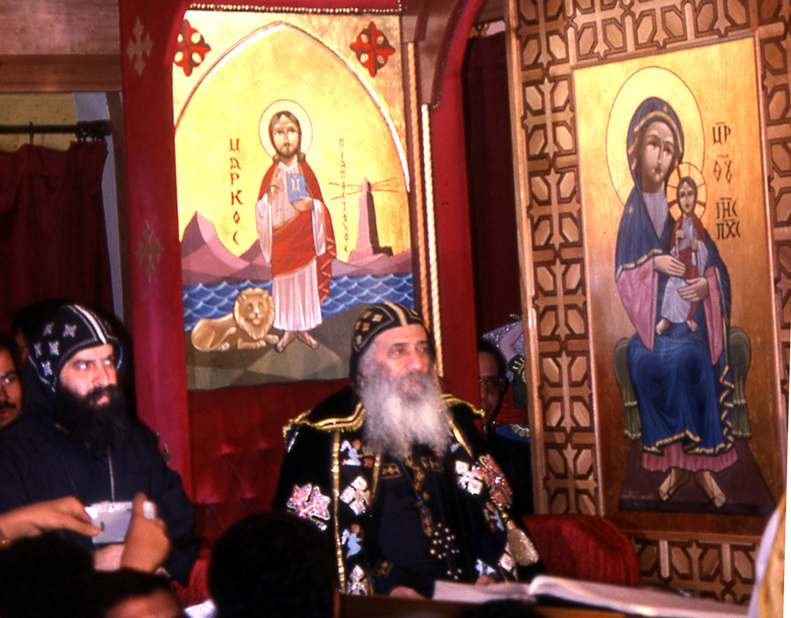
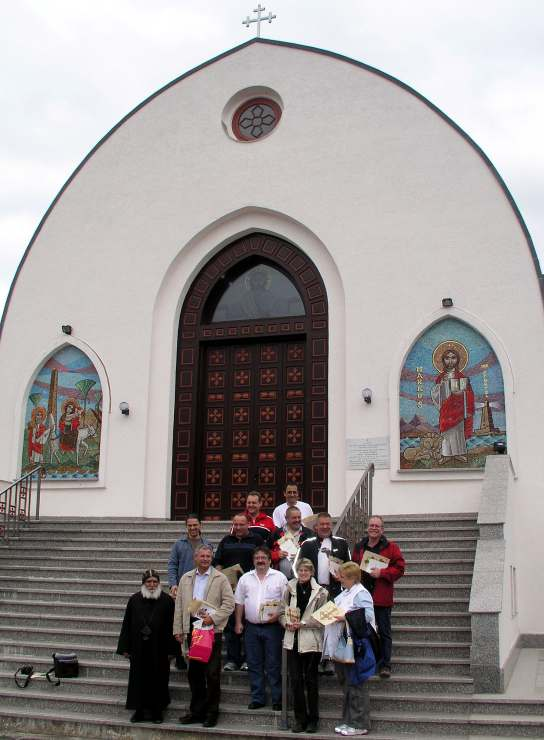

<!doctype html>
<html lang="de" dir="ltr">
<head><meta charset="UTF-8"><meta name="viewport" content="width=device-width,initial-scale=1"><meta name="description" content="Das St. Antonius Kloster in Kröffelbach/Waldsolms (in Arabisch) - St. Markus 2008"><title>Das St. Antonius Kloster in Kröffelbach/Waldsolms (in Arabisch) · St. Markus</title><link rel="preconnect" href="https://fonts.googleapis.com"><link rel="preconnect" href="https://fonts.gstatic.com" crossorigin><link href="https://fonts.googleapis.com/css2?family=Amiri:wght@400;700&family=DM+Sans:wght@400;500;600;700&family=Fraunces:opsz,wght@9..144,600;9..144,700&display=swap" rel="stylesheet"><link rel="stylesheet" href="../assets/site.css"><link rel="stylesheet" href="../assets/additions.css"></head>
<body class="article-page"><header class="article-header"><a href="../index.html#ausgaben" class="article-back">← Alle Ausgaben</a><a href="../index.html" class="brand"><span class="brand-mark">✣</span><span>St. Markus</span></a></header><main class="article-main"><p class="eyebrow">St. Markus · 2008 · Deutsch</p><h1>Das St. Antonius Kloster in Kröffelbach/Waldsolms (in Arabisch)</h1><p class="article-source">Ausgabe 1 · Seite 55</p><figure class="article-gallery"></figure><div class="article-text"><p>55  ‫س‬ ‫أ‬  ‫ا‬ ‫د‬    ‫خ‬    ‫دة‬  ‫ا‬ ‫ااز‬ ‫إاه‬ ‫&quot;اد‬# ‫م‬ % &amp;# 1980 &amp;+‫أو‬ -‫ا‬./   ‫ا‬  ‫ا‬ 0 ‫ا‬ 1‫د‬23 425‫ا‬ ،78 9 :‫ا‬ ‫ل‬ &lt;‫أ‬ ، =-‫و‬ &amp;# ‫خ‬ ‫آ‬ ‫ة‬. &amp;# ‫س‬ ‫أ‬  ‫ا‬ ‫د‬ ?-5 ‫ل‬ ‫ر‬- A+ B‫ا‬ ‫وس‬ 8 ‫ل‬ C ‫ت‬  E ‫ارت‬# ‫ل‬ 3 &amp;# F/‫اا‬ . ‫ات‬H  I/‫ا‬ ‫ا‬H‫ه‬ 5J‫أ‬ ./‫و‬ ‫دة‬.F5 ‫ا‬K 7 ‫ن‬ : N A/‫و‬ ، O2C‫و‬  ‫أ‬ ‫ل‬ 3 N # P‫ا‬ =-5 O# ‫ذ‬ R&lt; 2‫ا‬ ‫ي‬ &amp;#  F‫ا‬  P‫ا‬ # ‫ا‬ R&lt; 2 N% .F E TH‫وآ‬ ،  ‫أ‬ ‫ط‬ / ‫ا‬ ‫ت‬ FV8 ) 3‫و‬ K2 ‫و‬ ‫ورف‬.-‫ودو‬ ‫وآ‬ ‫ارت‬# ‫رت‬ V85 .( A‫ااه‬ .% P8 ،F- 3 ‫ت‬  E O =8 ،‫ا‬.C Z‫د‬ ‫ه‬ .‫ا‬  2 ‫[ن‬# T‫ذ‬ E‫ور‬ + ‫ا‬ ‫ان‬ \.‫أ‬  ‫ون‬ 2‫ا‬ ‫وادى‬ ‫اء‬+ _ ،. F5‫وا‬ ‫ا`ة‬ &amp;% aJ  .  ‫ا‬ ‫آ‬ b 59‫إ‬  ‫ا‬ P2‫ا‬ \ /‫وأ‬ [ R#‫اا‬ ‫ة‬c2F‫ا‬ .% &amp;# .‫ا‬ ‫ح‬ 55# 25   1980 ‫ا‬ ‫ة‬.% 1a9 ، .‫و‬ 5`‫ا‬ ?Z 2‫ا‬ ‫و‬.2‫و‬  2 .OF ?Z 2‫ا‬ 29 B‫ا‬ 425‫وا‬ ‫ل‬ ‫ر‬- A+ B‫ا‬ 425‫وا‬ /g‫ا‬  9</p>
<p>56 ‫وأط‬   ‫س‬  ‫أ‬ ‫وا‬  ‫ا‬ ‫ان‬ ‫ا‬ !‫و‬ &quot; ‫اا‬ #‫أور‬ %‫آ‬  ‫آ'ون‬ . ‫م‬ 8 ‫آازي‬ ‫اغ‬# &amp;#   .‫ا‬ ‫أن‬ ‫وا‬ . _ # .#‫أو‬ ‫ات‬2- ‫ة‬.F 7Z g‫إ‬ -‫ا‬./   ‫ا‬  ‫ا‬ 0 ‫ا‬ 1‫د‬23 ‫ن‬ ‫ره‬ iF‫و‬ ‫ل‬ ‫ر‬- A+ B‫ا‬ 425‫ا‬  ‫أ‬ &amp;/ .` ‫اس‬ ‫ا‬ ‫د‬ . ‫ارت‬# &amp;# ‫ة‬..C ?Z 2‫آ‬ ‫ا‬P-# j‫و‬ # ‫وه‬ ‫رج‬  ‫وه‬ N‫و‬ ‫رت‬ V853‫و‬ ‫ورف‬.-‫ودو‬ . _-‫أر‬ ‫ا‬. ‫ا‬ &amp;#‫و‬ -‫ا‬./   ‫ا‬ .‫ا‬ l‫إ‬ ‫د‬ ‫ن‬ ‫ره‬ N N%‫ور‬ N ‫راه‬ ‫رك‬ ‫ا‬ ‫اس‬ ‫ا‬ . _Z ` B‫ا‬ ‫ب‬ ‫ا‬ ‫ه‬ N ‫ااه‬ NH‫ه‬ .9‫أ‬ ‫ن‬ ‫وآ‬ 72% ‫ى‬H‫ا‬ ،l-‫ا‬ ‫ا‬ -‫ا‬./   ‫ا‬ . 5‫ر‬ ‫ة‬KC‫و‬ ‫ة‬5# .F . ‫ا‬H‫ه‬ _+‫ووا‬ ‫&lt;ال‬ .‫ا‬ ‫ء‬ 2 8‫و‬ ?-8 A‫ااه‬ ‫ب‬ ‫ا‬ 27 ‫ام‬ &amp;‫إ‬  % . #‫أ‬ 5- l‫ا‬9 ،‫ة‬ ‫آ‬ .‫ا‬ 9 P‫و‬ pc‫و‬ . . ‫ت‬ F-5 4P8 O‫أ‬ ‫أي‬ ‫اض‬E ‫ا‬ ‫دة‬.F5  5P . r O#- ./ &amp;  &amp;# /‫أ‬ ./ .‫ا‬ ‫ن‬ ‫وآ‬ ‫ط‬P . ‫ات‬+ ‫آ‬  N‫و‬ -‫ا‬./   ‫ا‬ ‫ة‬+‫و‬ ‫د‬ OV .‫ا‬ 5‫ر‬ _% ‫وء‬.‫وه‬ \+‫و‬ . ‫ن‬s‫ا‬ .‫ا‬ &amp;# 4 +‫أ‬ &amp;F‫ا‬ :‫ا‬ ‫وة‬ : + 2  ‫ح‬ T# _3 &amp;% ‫ة‬ ‫آ‬ P2‫آ‬ .K  O‫و‬ ،Ag`  _J‫ا‬.‫ا‬ N ‫ج‬ CK‫ا‬ TZ‫زا‬ N ‫ر‬+‫و‬ - =Z 9 ‫رة‬+‫و‬ ‫أ‬ u &amp;% ، &amp;% O‫آ‬ .‫ا‬ l ‫ازا‬ ‫ا‬ . l P‫ا‬ ‫ب‬ - B‫ا‬ 425‫ا‬ OaF -‫ر‬ ./‫و‬ . .C‫و‬ ‫م‬ % &amp;#  ‫ا‬ -‫ا‬./ O23‫د‬ ،4‫ا‬H ‫ث‬w P2‫ا‬ 1HO 1990 =-‫و‬ ‫ا‬ 4H‫ا‬ ، ?.‫ا‬ -‫إ‬ &amp;% ‫ا‬ ‫س‬ ‫أ‬  -‫إ‬ &amp;% ‫ي‬ ‫ا‬ 4H‫وا‬ ،‫ن‬ ‫اه‬ ‫أ‬ ?/ ‫ر‬  ?.‫ا‬ -‫إ‬ &amp;% l ‫ا‬ 4H‫وا‬  ‫ا‬  5‫ا‬ .Z / ?‫ر‬ ?.‫ا‬ ‫ل‬-‫ا‬ . + O2 N ،NP.‫ا‬ ‫و‬ ‫اء‬.Og‫ا‬ ‫د‬ PC‫أ‬ N ‫اه‬C P2‫ا‬ 1HO .C‫و‬ - 2w‫أ‬ ?.‫وا‬ ‫ل‬-‫ا‬ ‫س‬  ?.‫وا‬ ‫ل‬-‫ا‬ ?/ ‫ر‬  ?.‫ا‬ ‫س‬ ‫ن‬C ?.‫وا‬ ?‫ر‬ ?.‫وا‬ l-‫ا‬ ) .Z / 318  5‫ا‬ N ‫ي‬.2C  ‫ا‬ ( ‫ن‬ ‫ود‬ ‫ن‬ K/ ‫ن‬ P.‫وا‬ ‫س‬2 PE‫أ‬ ?.‫ا‬ ‫أم‬  P.‫وا‬ J‫أ‬ ‫اء‬.O3‫و‬ ‫ام‬ ‫اء‬.O3‫و‬ l ‫او‬ ?CC ‫ر‬  ?.‫وا‬ . + a‫أ‬ ‫م‬.`5P8 l‫وه‬ ،P2‫ا‬ N &amp;P‫ا‬ ‫ور‬.  9 P‫ا‬ ?2 ‫ى‬J‫أ‬ P2‫آ‬  10</p>
<p>57 ‫*ل‬+, !-‫ا‬ !#.‫ا‬ ‫ل‬ /* 01‫وآ‬ ‫ات‬34 ‫وا‬ ‫ات‬ 56 7 !8‫آ‬ . + ،=# ‫ن‬ ‫ه‬  ‫ص‬ J _5P ‫ء‬KC 7  ‫آ‬ ..C &amp;2  ‫اك‬ P2‫آ‬ 7 -‫ا‬./ ‫م‬5 ‫أن‬ s‫إ‬ Oc2 b‫و‬ ،‫ن‬ ‫ه‬  + J 4‫ا‬H ‫ث‬w O &amp;5‫ا‬ _Z ` O23.‫و‬ zF‫ا‬  ‫ا‬ .  9 P2‫ا‬ 1HO‫و‬ ، ‫د‬ P.‫ا‬ ‫د‬ -‫ر‬ ‫ت‬ ‫أ‬ _ % P‫ا‬ ‫ده‬ F‫و‬ ، P5 ‫ص‬ J ‫س‬C O‫و‬ 4 9 + . .C8 &amp;2 ‫ا‬ ‫ا‬HO‫و‬ NZKC N ‫ن‬58 / _‫وآ‬ ‫ن‬ ‫اه‬ l/ : ‫ة‬  ‫ودورة‬ ‫اءة‬ ‫ن‬ ‫و‬ P  / - ‫ا‬ ‫ء‬ |‫و‬  ‫ا‬ -‫ا‬. ‫ة‬.F l/ a‫أ‬ 7‫و‬ ، ‫آ‬ . ‫ص‬ J IV .C‫و‬ 5 ‫ن‬ ‫ه‬ ‫ن‬ ‫اه‬ ‫ء‬ s  + J 1.Z ‫و‬ j  N ‫ن‬ . a‫أ‬ &amp;2   R‫و‬ ‫ن‬ ‫ه‬ .9 . + 7‫و‬ ‫آ‬b‫ا‬   ‫ص‬ J ‫و‬ _5P ..V‫ا‬ &amp;2 ‫ا‬ N Js‫ا‬ ‫ء‬KV‫ا‬ ‫ف‬a 9‫ا‬5-‫إ‬ + ..C &amp;2  &amp;# ‫رة‬ V2‫ا‬ ‫ل‬ }3‫وأ‬ ‫ء‬ O‫وا‬ ‫م‬ ‫وا‬ ‫آ‬ P 3‫ور‬ ‫ت‬.ّ 3 . + .‫ا‬ &amp; ‫ا‬ ‫ح‬+‫إ‬ 8 TH‫آ‬ ‫ة‬ ‫ا‬ ‫رض‬ ‫ا‬ F / ‫اء‬3‫و‬  ) 2 ‫ان‬.# ( &amp;# .‫ا‬ N _FC  ،‫ب‬ g‫ا‬ ‫ت‬ &lt; g‫و‬ ‫وار‬K  + J \FC‫و‬ .‫ا‬ OC‫ا‬ ‫دة‬ F‫وا‬ ‫`ة‬ ‫م‬ ‫ا‬ ‫ة‬.% ‫ء‬ a ‫أور‬ _‫آ‬ N O8Z F ‫ط‬ / ‫ا‬ 1.c  ‫ه‬ ‫ارا‬K NP.‫ا‬ ‫ب‬ 9‫ر‬ &amp;# . ‫ا‬ ‫ط‬ / ‫خ‬  ‫س‬ ‫ا‬  ‫ا‬ ‫د‬ 4 +‫أ‬ ‫ا‬H‫وه‬ VO aJ 7# ‫ا‬P2 -. ‫ارا‬K c ‫اء‬+ &amp;# ‫ة‬ F‫ا‬ ‫دة‬ ‫ا‬ _ &amp;‫ور‬ ‫ا‬ ‫ى‬KF8 9 ‫ة‬JH‫آ‬ ‫س‬.‫ا‬ ‫واوح‬ F2  ‫ن‬u5 72 ‫ن‬FC‫و‬ ،‫ة‬ ‫ا‬ ..C N  F‫ا‬ %‫ر‬ c &amp;% ‫ه‬.% P8‫و‬ O- .  2‫ا‬ . I O% R5  ` #‫و‬ 58 .‫ا‬ ‫ت‬ F-8 ‫أن‬ ‫آ‬H  .V‫وا‬ ‫ت‬  E  2 &amp;# I .‫ا‬ ‫ن‬ ،F ‫ا‬  9 ‫إدارة‬ #‫ا‬ .F O VP‫و‬ ‫ادارة‬ 1H‫ه‬ O% ‫ف‬g8  C . _ 5P‫ا‬ &amp;# &amp;2  ‫ف‬-  `‫ا‬ 1H‫ه‬ AP9‫و‬ ‫اآ‬   ‫ص‬ J &amp;2  . ?‫و‬ ،Z 5‫ا‬ ‫ت‬ % 5‫ا‬ &amp;% =# .5F.‫وا‬ 8 ‫أو‬ %‫زرا‬ ‫أو‬ ‫رات‬ F‫آ‬ ‫ر‬ 5-‫إ‬ I‫ر‬ g 7 ‫ت‬ ‫ا‬9  . O. .J z%‫أ‬ ‫إن‬ .‫ا‬ VO‫ا‬ &amp;# &amp; ‫ا‬ AFg 9‫او‬  %‫ا‬ &amp;‫ه‬ . .# . 4 +‫أ‬ ‫د‬b‫أو‬ 9‫رو‬  8 7 ‫ن‬c5‫و‬ 7‫ورو‬K ،‫ده‬.% &amp;c b ‫ن‬ \ ‫آ‬ ‫اء‬- ،O8 9 &amp;#  O#‫د‬ c8 .2%  + ‫رة‬g ‫أو‬ ‫آ‬ 72 ‫وا‬HJ  11</p>
<p>58 % ‫أو‬ 9‫رو‬ g ‫أو‬ _F‫ا‬ &amp;# g ‫أو‬ 8 ‫أو‬ + ‫أو‬ -‫درا‬ ‫أو‬ Z  /‫ا‬ 4c8 . ‫ب‬/ ‫ق‬ %‫أ‬ &amp;‫إ‬ ‫س‬ ‫أ‬  ‫أ‬ ?.‫ا‬ _+‫و‬ ‫ا‬H‫وه‬ AFg‫ا‬ l ‫ا‬ ، VO‫ا‬ E &amp;# E‫ر‬ ، 2-2 P KF‫ا‬ 75‫آ‬ ‫رت‬ +‫و‬ ‫آة‬ ‫ء‬ /.+ ‫وا‬ Z F‫وا‬ N&lt;‫وا‬ ‫م‬ ‫ا‬ 25P2‫آ‬ N% ‫ا‬.F VO‫ا‬ &amp;# 2‫آ‬ g . ‫ط‬ / ‫خ‬  ‫س‬ ‫ا‬  ‫ا‬ ‫د‬ ‫ع‬ F3‫إ‬ ‫ة‬/ ‫ار‬. ‫رئ‬  4ƒ‫أو‬ &amp;‫و‬ N .‫ا‬ ‫زوار‬ O2 &amp;8‫أ‬ l5‫ا‬ ‫ن‬.‫ا‬ ‫د‬.% ‫ء‬ c9[ \/ &amp;‫أ‬ ‫أذآ‬ &amp;‫ور‬ ‫ا‬ VO‫ا‬  O3 =-‫أوا‬ &amp;# N 55 .9‫أ‬ l &amp;# ‫ط‬ / ‫ا‬ 2007 . O‫أ‬ V52‫ا‬ \ # N ‫وا‬.#‫و‬ 53 ‫و‬  ‫أ‬ 2. 12 2. ‫و‬ P# 7 2.‫و‬ .2‫ه‬ ‫ن‬. .- . l‫ا‬9 O2 .#‫و‬ &amp;5‫ا‬ ‫ن‬.‫ا‬ &amp;‫إ‬ # ƒ  ‫ا‬H‫ه‬ 40 l# ‫ا‬8‫أ‬  ‫أ‬ ‫ا‬Z‫زا‬ N‫ا‬ NH‫ه‬ . ‫و‬ H2 PJ ،‫ات‬2- ‫م‬ % &amp;# ‫أى‬ 2002 ، ?-‫أ‬  ‫ا‬ -‫ا‬./ 1‫د‬23  ‫ا‬ ‫آ‬ ‫ا‬ 0 ‫ا‬ ‫اآ‬ ‫ر‬.2-‫ا‬ -‫ر‬. i  ‫آع‬ ،‫خ‬   8‫اه‬ ‫أور‬ &amp;# . ‫ات‬2- F‫أر‬   -‫را‬.‫وا‬ ‫أي‬ 8 -‫درا‬ ‫ل‬c# . -‫را‬.‫ا‬ z28‫و‬ ‫ع‬ - ‫ا‬  O &amp;# ، .9 ‫ا‬ ‫م‬ &amp;‫إ‬ FV‫ا‬ ‫م‬ N .  % &amp;#‫و‬ l 2006 ‫و‬ 2007 5C`8 O2 ‫أ‬ F#‫د‬ ‫ول‬ ‫ن‬ 5 ) 30 c`3 ( .  ‫رس‬.‫و‬  ‫ا‬ . ‫ح‬ V2‫ا‬ ‫ا‬H‫وه‬ ‫ه‬ ‫ا‬ ‫ادارة‬ &amp;% _‫د‬  ‫أآ‬ ‫ه‬ ‫ا‬ ‫خ‬ 2‫ا‬ #5 ‫را‬ O‫و‬  AZ‫ا‬.‫ا‬ _F‫وا‬  A5‫ا‬ #8‫و‬ ، .PC‫و‬ 9‫ورو‬ %   ‫وا‬ ‫ة‬H8 - ‫ا‬ N _ A- 2‫ا‬ ‫از‬ F‫ا‬ IC‫واا‬ -‫را‬.‫ا‬ .  N-‫ار‬.‫ا‬ ‫أن‬ ‫آ‬H  .C‫و‬  ‫ن‬8  9‫أ‬ &amp;‫ا‬ O8Z F ‫ا‬ ‫ة‬.F‫و‬ /5 ‫ن‬.‫و‬ ‫ان‬. N # ، 5 z2 .‫ا‬ ‫إدارة‬  1HO ‫ت‬Z F‫ا‬ &amp;# O5 /‫إ‬ N ‫ون‬J ‫ا‬ ‫ه‬ ‫وا‬.5P &amp;59 # w‫و‬ 9‫رو‬ V  .‫ا‬ ‫ا‬H‫ه‬  F‫ا‬ . &amp;5‫ا‬ .‫ا‬  5 ‫آ‬b‫ا‬ ‫ا‬ KZ ‫رآ‬ N‫و‬ \P-8 ‫م‬ % 1980 \ +‫وأ‬ ، ‫ت‬ } ‫درة‬  IC‫وا‬ F‫وا‬ 2.‫ا‬ A5‫ا‬ N ‫ف‬bs‫ا‬ O 2E  5 ‫ن‬s‫ا‬ 5` :   ‫وا‬  ‫ا‬ F‫ا‬ }‫ا‬ &amp;‫إ‬ # ƒ  ،P‫وا‬ KV‫وا‬ . A5‫ا‬ 1H‫ه‬ N .5P‫و‬ ? a‫أ‬ N‫و‬ ،=# &amp; ‫ا‬ AFg‫وا‬ ‫ا‬  &lt; P2  ‫ن‬5O NH‫ا‬ ‫ن‬  ‫ا‬ N ‫ن‬9 ‫ا‬ P‫ذآ‬w‫ر‬ ‫ا‬  ‫ا‬ . g2‫ا‬ ‫دار‬  5‫وا‬ ‫ا‬ .aF8‫و‬ ) /‫ر‬ \8 VP 927464 - 3 ( ./‫و‬ ‫ت‬g‫أ‬  12</p>
<p>59 ‫ف‬:;# ‫اط‬ &lt;=# ‫م‬ :‫و‬ ،!@:‫وا‬ !‫وا‬ !A‫او‬ B.-‫ا‬  ! C.# ‫اث‬.‫ا‬ ‫ا‬ ، ‫ا‬: B.‫آ‬ ; ‫و‬ #‫ا‬ ! !EF ، ‫ا‬ !G7‫ا‬ ‫إ‬  :*.@ .A !  N ..V‫ا‬ _V‫ا‬ ? O N‫و‬ =# ‫ط‬ / ‫ا‬ a‫أ‬ ‫ن‬  ‫ا‬ . V a‫أ‬ .‫ا‬ ‫ر‬.c‫و‬ &quot; / ‫ر‬  ? &quot; _‫آ‬ 3 ‫ر‬O3 .   ‫ء‬KC F‫ا‬ }  ‫ء‬KC‫و‬   ‫ا‬ } . VP &amp;‫وه‬ /‫ر‬ \8 ‫دو‬ 3-927464-4-X . ‫و‬ ‫م‬. ‫خ‬  ‫س‬ ‫ا‬  ‫ا‬ ‫د‬ ‫ل‬ &lt; ‫ا‬ N ..V‫ا‬ _V + J ‫ت‬ .J  -  ‫ا‬ P2‫ا‬ Na9 &amp;# ‫ا‬z &amp;59 ‫ب‬ g‫وا‬  ‫ن‬  F‫ا‬ ‫رات‬ 8 .ƒ ‫ن‬2c 7# ‡F ‫ي‬H‫ا‬ &amp;  ‫ت‬ .`‫ا‬ 1H‫ه‬ N‫و‬ ، : * P2‫ا‬ 5‫ا‬ ‰ ‫ب‬ g‫وا‬ ‫ل‬ &lt; ‫ة‬.F‫ا‬ F8‫و‬ 9‫او‬ ‫ت‬ ‫ر‬.5‫ا‬ Na58 l5‫ا‬  ‫ا‬ ‫ن‬  ‫وا‬ + ‫ا‬ P‫زآ‬w‫ر‬ ‫ا‬ . 1H‫ه‬ N VO‫ا‬ &amp;# 25P2‫آ‬ \2C ./‫و‬ P2‫ا‬ 5‫ا‬ 2 ‫اه‬ l  &lt;‫و‬ P g‫وا‬ N‫رز‬ ‫ا‬ ‫ام‬.`‫ا‬ N 9 |C * ‫ب‬ g ‫ات‬8&quot; -‰‫و‬ J Š‫ا‬  O + ‫دى‬ ‫ا‬ ‫ب‬ g‫ا‬ 8&quot; Ow.9‫أ‬ ‫ن‬ ‫وآ‬ ،   O3 &amp;# .% ‫ي‬H‫ا‬ g% 2007 ‫و‬ ‫ب‬ g‫ا‬ N NF - N ‫أآ‬ 1a9‫و‬ 8&quot;  O3 &amp;# .% ‫ي‬H‫ا‬ - ‫ا‬ 2007 ‫أن‬ E‫ور‬ .‫ا‬ ‫ت‬Z F‫ا‬ N ‫آا‬ ‫أن‬ b‫ا‬ ‫ت‬  }  ‫ة‬ }  C  2 &amp;# I  .‫ا‬ N ‫ب‬  &amp;2P \9K  ‫ا‬  ‫ا‬ ‫د‬ ‫ب‬ 9‫ر‬ &amp;# O &lt;‫أ‬ &amp;5 2O‫ا‬  %‫ر‬ \8 ‫س‬ ‫أ‬ . ./‫و‬ ‫أ‬ + ‫س‬ ‫ا‬  ‫ا‬ ‫د‬ 4 ‫خ‬  K‫آ‬ ‫ع‬ 5-‫إ‬ ./‫و‬ ،  ‫أ‬ &amp;# &amp; / ‫ع‬ F3‫إ‬ .‫ا‬ P ‫ات‬8&quot; .%‫و‬ # a5-‫إ‬ I ‫ن‬  ‫ا‬ ‫اهت‬  &lt; .F 2‫وه‬ ،7 2‫ود‬ % ‫أ‬ O8H8 - -‫را‬. ‫رات‬ 2-  ‫ا‬ ،‫م‬ ‫أ‬ ‫ة‬.F &amp; ‫ا‬ ? 4 P5‫وا‬ ‫ت‬ -‫ا‬.‫ا‬ ‫ر‬a9 &amp;% O# ‫ن‬ ‹‫ا‬ ، b a‫أ‬ O5 9‫و‬ I55 _ =# O5-‫را‬. . :‫و‬ I=3‫و‬ ‫ت‬J;‫ا‬ !@:‫ا‬ ‫ا‬  !  @‫د‬ ‫ا‬   ‫أ‬ ‫س‬   ‫خ‬7*@-# 78 !@F !A‫ا‬ ،!@:‫ا‬ %*4 @:‫ا‬ @M‫ا‬N# ‫ا‬  ‫ن‬  ،@:. ‫ا‬ ‫م‬ @‫و‬ @:‫ا‬ B5.# ! :F !EF ‫ء‬P6; ،‫وار‬N‫ا‬ :Q@‫و‬ #‫أ‬ ‫ء‬ R  Q@F !7-‫ا‬ !-@7‫آ‬P‫ا‬ - ‫ا‬ =@ ‫وار‬N‫ا‬ !-# !‫ا‬ ;S@‫ر‬5‫و‬ :Q ‫ا‬ ‫ودوره‬ -‫ا‬  U Q ‫ا‬ ! - ‫ا‬ ‫او‬  V5‫و‬ !‫اه‬ ، ‫ا‬N;. R1‫ه‬ !E*‫ا‬ W@‫أ‬ X;5‫از‬- !4 # ،!4‫ا‬  13</p>
<p>60 ‫ا‬ ‫ن‬ ‫اه‬ _F# ‫آ‬ \F# ‫و‬ ،&amp;‫و‬ ‫ا‬ ‫اون‬ &amp;# ‫ا‬.2‫أ‬ &amp;‫إ‬ ‫ا‬ ‫ذه‬ NH‫ا‬ ‫ط‬ / ?‫ر‬ ?.‫ا‬ ‫دة‬ / \8 ،  ‫وا‬ ‫ا‬P- &amp;#   ‫ا‬  5‫ا‬ .   ‫ا‬ P2‫وا‬ ‫ا‬ ‫Œت‬uO‫ا‬ w ‫وه‬ ‫أول‬ H2 .‫ا‬ AP5‫إآ‬ ./‫و‬ . ‫ل‬ / .# ‫ه‬ &amp; E‫أ‬ ‫ة‬ 2/‫و‬   ‫ا‬ ‫ات‬2‫ا‬ 75 # &amp;# ‫خ‬  ‫آ‬ ‫ة‬.% ‫م‬ F‫ا‬ ‫ا‬H 2007 &quot; : ‫إن‬ ‫خ‬   ‫آ‬ .‫ا‬ ‫ا‬H‫ه‬ .&quot; ?Z 2‫ا‬ .OF . ‫راوخ‬ ‫ر‬5‫آ‬.‫ا‬ P‫ا‬ ‫ل‬ /‫و‬ ‫رج‬K2V /g‫ا‬ &quot; : F‫ا‬  ‫ا‬ 2 ‫ه‬ 9  7‫إ‬ .&quot; iF 1H‫ه‬ =# O ‫م‬ &amp;5‫ا‬ .`‫ا‬ ‫ت‬ &lt; g2‫ا‬ _‫آ‬ ?‫و‬ .‫ا‬ ‫ت‬ .J A C &amp;‫إ‬ PZ‫ا‬ .‫ا‬ -‫ا‬./  /‫إ‬ N  ‫ات‬+‫و‬ 4 P8‫و‬ ‫ت‬ OZ‫إدا‬ &amp;% ‫ص‬ l5‫ا‬ c &amp;# F‫ا‬ ‫دة‬ ‫ا‬ 7 ‫م‬8   8 l ‫ا‬ ?  #‫و‬ : # ‫م‬ 8 % P‫ا‬  P5‫ا‬ 4 % P‫ا‬ lOb‫ا‬ ‫اس‬.‫وا‬ 9 + 7 ‫ا}وب‬ ‫ا‬K‫و‬ 9 + . ‫ا‬H‫ه‬ A C &amp;‫إ‬ .‫ا‬ ‫ور‬K ‫ى‬H‫ا‬ AFg‫ا‬ N  ‫آ‬ ‫د‬.F ‫ات‬V‫وا‬ ‫ة‬.Z ‫ا‬ .J &amp;# + J   O ‫وا‬ &amp;ƒ c`g‫ا‬  %‫ا‬ &amp;‫إ‬ # ƒ  ‫ا‬H‫ه‬ ،‫ع‬ - ‫ا‬  a5  /‫وإ‬ ،N ‫آ‬ &amp;# ‫أن‬ ‫إذ‬ ،‫اب‬ &amp;# N./‫اا‬ &amp;% ‫ز‬ 2V‫ا‬ ‫ات‬+    .C8 ‫خ‬  ‫ا‬  N/‫ا‬. ) ‫س‬# &lt; ( ‫ة‬.9‫ا‬ + `‫ا‬  &amp;# ‫ط‬ / ‫أ‬   . ‫ن‬8 ‫أن‬ _5P 2‫ه‬ ‫ه‬ ‫ذآ‬ l5‫ا‬ .‫ا‬ ‫زات‬ V‫إ‬ ‫ن‬# I  ‫و‬ _ ‫دي‬# _% ‫ج‬ 5 &amp;# - ‫ن‬F ‫ء‬ 2‫وأ‬ ‫ة‬J‫وإ‬ ‫ء‬ r N _ ‫آ‬ R# O ‫م‬ ‫ق‬ 3 .OC ‫ة‬w &amp;‫ه‬ ‫ات‬+ ‫آ‬  ،‫ات‬H ‫ر‬ ‫وإ‬ ‫ق‬ #‫وو‬   -‫ا‬./   ‫ا‬  ‫ا‬ 0 ‫ا‬ 1‫د‬23 F‫و‬ ‫ا‬J‫وأ‬ b‫أو‬ :‫ا‬ . : .‫آ‬ ‫ا‬1‫ه‬ @.‫ا‬ ‫ة‬:8 # ‫[ء‬ ‫ز‬ @'‫آ‬ ‫ّف‬ = B=‫ا‬ &quot;‫ا‬  /  Q; ‫وا‬ % =# ‫آازي‬ X^8 ‫ص‬4@ ‫ن‬ M‫ا‬ # 78 ‫أن‬ ‫ا‬ @  ‫*ء‬S‫ا‬ . ‫وإن‬ F %‫د‬ 78 ‫م‬:8 .G   R.‫آ‬ ‫ه‬  ‫ورد‬  ‫ة‬:/‫ا‬ !.‫ا‬ 87 ‫اب‬ ‫ن‬ ‫أ‬ R‫د‬ ` := ‫دام‬. V# B‫وا‬ !7-# !-@7‫آ‬a‫ا‬ # @: ‫ا‬ ‫س‬  ‫ا‬ ‫خ‬7*@-# :  14</p>
<p>61  8 @ @‫د‬  8 @‫@د‬ ً  @‫ودا‬ ‫ورك‬N 07Q %=‫و‬ C‫ا‬ ‫رك‬ # ‫ان‬N ‫ب‬ 7‫ا‬ , 05 !7 C #‫و‬ @‫ا‬: ‫ا‬ IA ‫رك‬ 8 ***  %‫آ‬ #‫أورو‬ ‫س‬ !4@‫را‬ !@C &quot; ‫خ‬7‫آو‬ ‫@ة‬NC !A‫رو‬ ‫دة‬8 !+#‫و‬ ‫ة‬:@ ‫و‬ &quot;‫ــــــ‬#h‫أ‬ ‫ّة‬ #‫أ‬ ‫ّة‬ F‫وأ‬ !‫ـــــ‬4 ‫و‬ !‫@ــــ‬  ‫أ‬  ‫أ‬ ‫س‬ 0@A ‫ك‬:@5 ‫م‬ :=‫ا‬ ‫ق‬.5  * ‫@ك‬: :‫وزه‬ ‫ة‬4‫ا‬ = ‫ف‬ 0#A‫ر‬ %-#‫و‬ ‫ت‬G7‫ا‬ ‫ل‬  ‫ك‬:C 5 @ 07 ‫ح‬  0‫ا‬ A‫و‬ ‫ن‬ + &quot; k ‫و‬ B8. ‫ا‬ 0WA ‫ن‬ ‫أ‬ !A‫وا‬ *‫ا‬ ‫ف‬ B; ‫م‬ ;‫ا‬ ‫وف‬ ‫[م‬3 ‫ة‬4‫ا‬ 08=` ‫@ن‬ ‫ات‬ ‫ا‬ l# z% 1‫د‬23  ‫ا‬ ‫ر‬  ‫ن‬ ‫إ‬ ‫ت‬ ‫ــــ‬  75z9 ?/ ‫ن‬ .‫د‬ R‫و‬ Ž%‫ا‬ l# ّ % ‫ت‬ OC I‫ر‬ ‫ا‬ ‫ف‬ ‫اازة‬ ‫ت‬g ‫ام‬:F ! 7-‫ا‬ ‫*ــــد‬A‫أ‬ :‫ا;ـــــــ‬ @:E ‫=رف‬ ‫ا‬ BA‫و‬ :@N ‫ا‬ &quot; @‫د‬ ‫رة‬ X78 ‫ت‬ ‫هـــ‬P‫و‬ :Q ‫و‬ !@‫ر‬:- ‫إ‬ ‫د‬8  :@:C ‫أط‬ ‫م‬ ‫[د‬ ‫ا‬ .A‫و‬ ‫ـــت‬ ‫ا‬ ‫ء‬8‫ود‬ ‫م‬ 4‫آ‬ , ‫ء‬ -A ‫ّت‬ 4‫آ‬ ‫رواد‬ U Q ‫ا‬ , ‫ّاس‬ A ‫ن‬ @a‫ا‬ ‫*اء‬ l ‫ا‬ k ‫و‬ ‫ت‬W‫ا‬ ***  8 @‫@د‬ ً  @‫ودا‬ ‫ورك‬N 07Q %=‫و‬ C‫ا‬ ‫رك‬ # ‫اب‬ ‫ان‬K , ‫رك‬ % \9 # N‫ا‬.‫ا‬ N‫و‬ C T8-  15</p>
<p>62 ‫ا‬./ -   ‫ا‬ ‫ا‬ . ‫ى‬ ‫ا‬ P2‫ا‬ N3.8 _9 &amp;# 0 ‫ا‬ 1‫د‬23  ‫أ‬ ‫س‬  ‫خ‬  ‫م‬ % 1990 .  &amp;O‫ا‬ ‫اس‬.‫ا‬ ‫ن‬c ‫خ‬  ‫س‬ ‫أ‬  ‫ا‬ ?.‫ا‬ ‫د‬ ‫ء‬ r  16</p>
<p>63 ‫ة‬.% ‫خ‬ ‫آ‬ ) ‫أ‬ A V (  5 - &amp;# . ‫رة‬ ‫ز‬ &amp;# &amp; ‫أ‬ .#‫و‬ I 2007 17 </p>
<p>64 2- ‫ن‬ 5‫إ‬ ‫&quot;دون‬ ‫اآ‬ 0 ‫ا‬ ‫دة‬23  ‫ا‬ ‫آ‬  &lt;‫و‬ ‫ت‬  &lt; 2007 .% ‫ى‬H‫ا‬ ‫ن‬ P‫ا‬ ‫ق‬9 8&quot; &amp;# PC ‫ا‬ .  ‫أ‬ ‫م‬ % ‫خ‬  ‫س‬  2005  18</p></div><aside class="article-download"><p>Die Gestaltung, Bilder und der vollständige Originalsatz bleiben in der PDF-Ausgabe erhalten.</p><a class="button" href="../pdf/2008-1_StMarkus_Zeitschrift.pdf#page=55" target="_blank" rel="noopener">Originalseite als PDF öffnen ↗</a></aside></main><footer><div><span class="brand-mark">✣</span> St. Markus</div><p>St. Antonius Kloster · Waldsolms-Kröffelbach</p><a href="../index.html#ausgaben">Alle Ausgaben</a></footer></body></html>